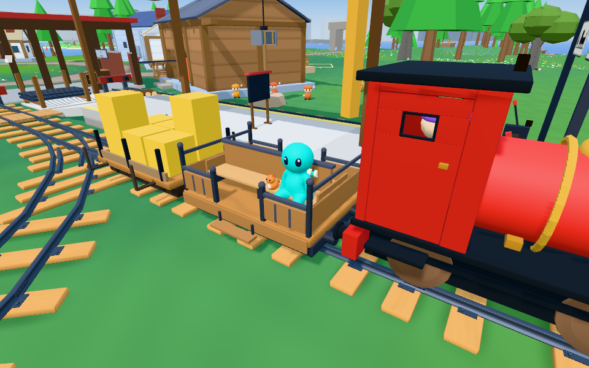

BOOGLE / STEP A / 16 NOVEMBER 2026 / DESIGN INTENT ONLY
A car for the little guys
Four player seats stay on the knifeboard. Eight little guys get their own places, included with each passenger
train. No purchase and no counter: the passengers themselves show the load.
Anchor — today’s car

Captured from cb4b902b at Village, line 2 (WebGPU, no graphics errors), before V1: this is today’s car, not the
proposed eight standing riders. The anchor preserves the chunky wood, dark iron and real character proportions;
drawings below are flat design studies, not in-game renders.
The sizes that bind
| Measured from source |
Metres |
| Flatbed / deck over rail |
2.20 wide × 3.20 long / 0.70 high |
| Knifeboard / seat top |
1.10 wide × 2.74 long / 0.32 above deck (1.02 over rail) |
| Player / little guy |
1.70 collider height × 0.90 diameter; Buddy arms ≈0.91 / ≈0.95 tall, hat 0.584 wide |
| Player spacing / pet |
1.30 along bench / 0.62 to owner’s right on bench |
| Halt / fit envelope |
0.72 high; edge 1.65 from track / roof envelope 2.55 wide, 2.77 high |
Sources: car-kit,
cars,
bench recipe,
folk geometry,
player capsule: 2 × 0.45 + 0.8,
10 November study (Buddy arms / seats / pet). Folk hat: 2 ×
0.292; crown reaches 0.99, hence “about 0.95”.
1 · End perches on today’s car
Two low transverse perches, four riders at each end, keep the 3.2 m deck and the knifeboard. The measured plan
exposes the compromise: hats overlap at 0.54 m pitch, and the end passengers overlap the player and pet zones.
Build: new wood perch and iron grip meshes in car_fit, eight rider poses on the existing
rock frame; keep all four player anchors, Sit and colliders. No train growth or platform relocation; Cars tab
preview would show eight riders beside four player seats, with no new purchase.
Do not build this packing as drawn: it needs clearance it does not have.
Plan: coral = player envelope; slate = pet; green = little-guy hat footprint. Circles are measured occupancy
guides, not new character designs.
2 · A dedicated rider bay — recommended
Extend the car by 2.4 m with a low, open rider bay: four little guys along each side of a miniature central
bench, facing the halts at 0.60 m pitch. The original 3.2 m player section keeps its knifeboard, pets and
access; the longer silhouette makes the two scales legible.
Build: a longer deck, underframe and side boards, a small wood bench (proposed seat top 0.20 m above
deck), low iron end grips and eight seated rider poses; retain the original player bench mesh and anchors at
their present positions. Extend the car’s rock group, revise car bounds, wheels, couplings and downstream
offsets: train length grows 2.40 m; keep the cargo deck free for its own loads. Cars tab gets a longer
preview, no added price or capacity upgrade.
Platform cost: this is not a drop-in fitting. The 10 November study found +0.10 m forward already failed
Home with the big boiler, and +0.20 m backward failed the wagon/points layout. This +2.40 m needs revised
stop/layout clearance at Home and a line 2 halt review, including Quarry’s parked layer, curves, garage stalls
and tables; platforms may need extension or stop relocation. Quarry decks are 20 / 20.5 m long, Far Head and
Pier 22 m; platform length alone does not prove the complete train fits at its stop.
Recommended bay · front, side, back
Natural wood and dark iron, matching today’s car; no canopy added. The end views share the same symmetric open
rail; the side shows the unchanged adult bench and the smaller passenger furniture. Figures in elevations mark
standing size envelopes; the build needs a real seated little-guy pose, not a shrunken Buddy.
Choose space over squeezing
I recommend 2: it gives the little guys recognisably their own furniture without spending the players’
legroom or pet places. Its cost is real layout work; if this step must retain the current train envelope,
neither of these drawings is ready to build.
Not judged: real seated rider silhouette, eight riders with four players and four pets, boarding and
walking clearances, rocking and curve sweep, platform and garage fit, camera occlusion, performance or device
readability. Those need a build; these drawings establish intent and expose footprint costs, not clearance
approval.
Principle: 11. Show, don’t tell. Recommendation only; no owner approval claimed.
Step A brief ·
Keep Four, picked 10 November. No generated bitmap art or
external assets; inline SVG studies are original measured diagrams. No game code changed.